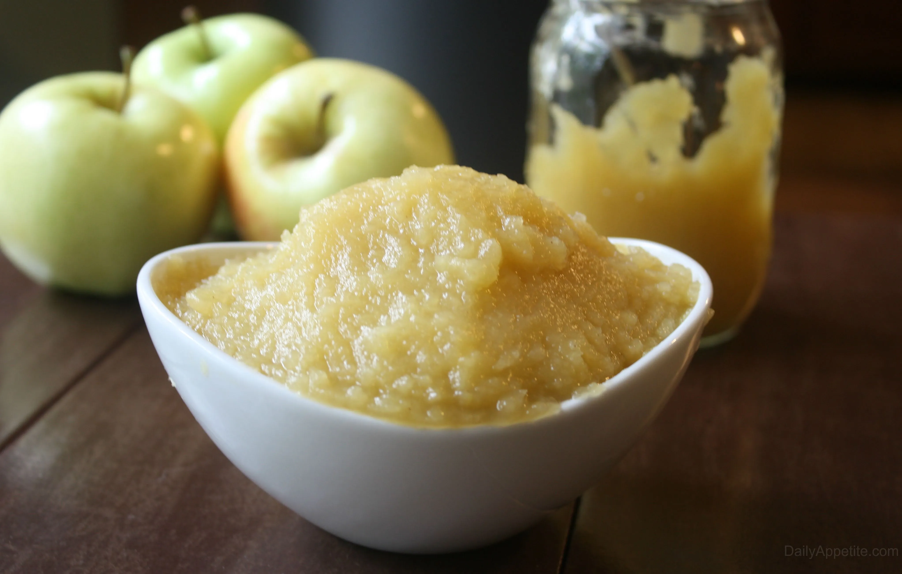

I found and attempted this recipe from a tutorial from Sugar Spun Run, you can find this youtube video here.https://www.youtube.com/watch?v=XueXhrvdYOM

From Google Images https://thestayathomechef.com/how-to-make-applesauce/
Ingredients
3 lbs apples, peeled, cored, and diced (I recommend using a crisp, sweet apple like Fuji, Honeycrisp, Gala, Pink Lady, or Cortland.) Weigh before peeling/coring apples. (1.4kg
1 cup water
3 Tablespoons granulated sugar
1 Tablespoon lemon juice
2 Cinnamon Sticks
Conversion
Rate this recipe
Equipment Needed
Apples of course
Knife and Cutting Board
Blender
Spoon
Storage Containers
Directions
Combine apples, water, sugar, lemon juice, and cinnamon sticks in a large pot on the stovetop. Stir to combine.
Turn stovetop heat to medium and bring mixture to a simmer. Reduce heat to medium/low, cover with lid, and continue to cook for 20-30 minutes, checking/stirring once or twice to make sure the heat is not too high and apples are not burning to the bottom of the pot.
Cook until apples are completely soft and tender when pierced with a fork (they should give easily to the fork and offer no resistance).
Remove from heat and carefully remove cinnamon sticks. Mash with a potato masher (for chunkier applesauce) or blend with an immersion blender until smooth (for a smoother applesauce). You may also transfer the apples to a blender and puree until smooth if you don’t have an immersion blender.